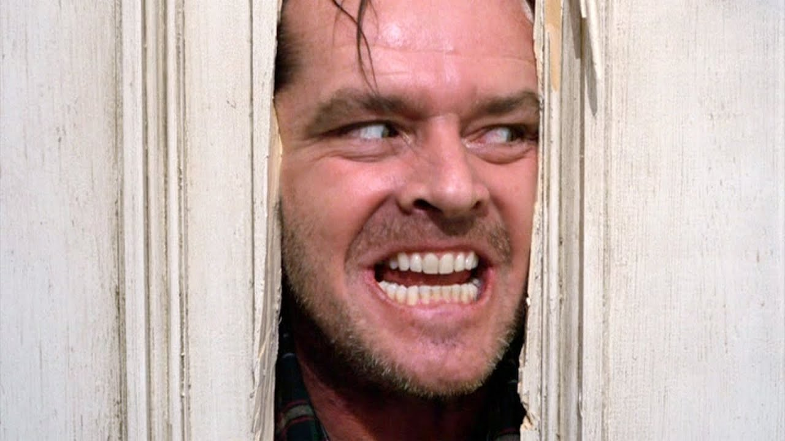
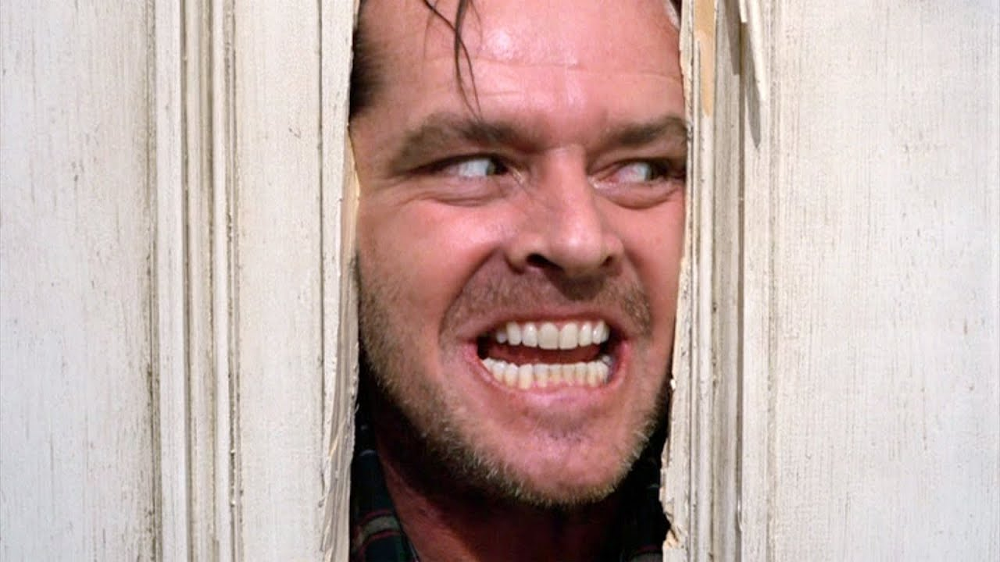
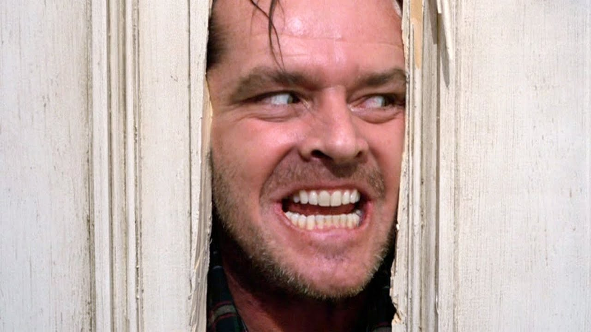

Gallery
 


*The Shining* is a psychological horror film directed by Stanley Kubrick, based on Stephen King's novel. It tells the story of Jack Torrance, a writer who becomes the winter caretaker of the isolated Overlook Hotel.
